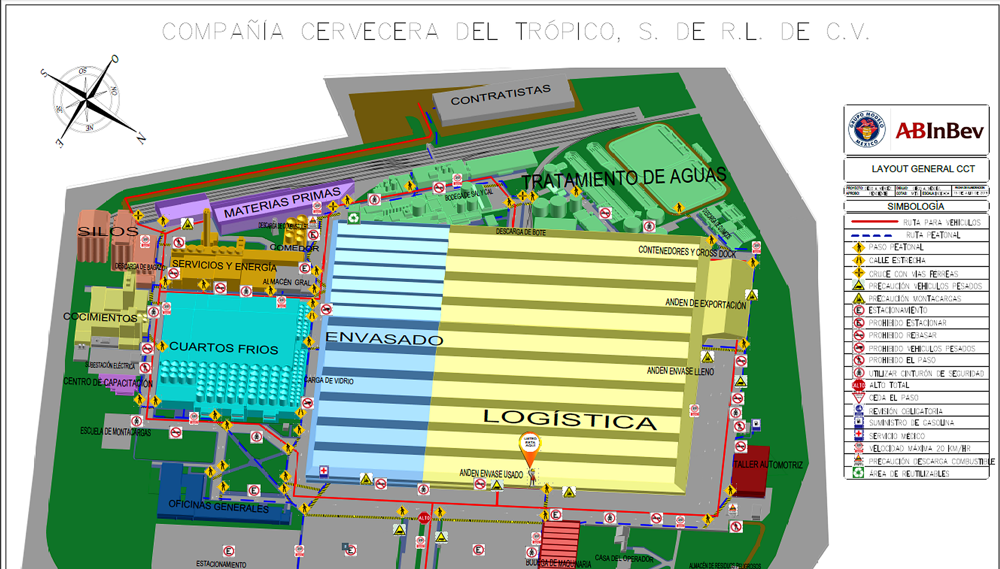

Territorios seguros
Ubicación en plano y seguimiento semanal de reportes.
Layout
Análisis detallado
Plano general
● Sin registro
● Con registro
Vista completa

Agrega una ubicación y asígnale un territorio. Los datos del panel se actualizan desde el archivo publicado.
Análisis detallado de reportes
Conectando con los datos publicados…
Turnos: 1.º 22:00–06:00 · 2.º 06:00–14:00 · 3.º 14:00–22:00
Territorios en la lista
—
Cumplen todos los turnos transcurridos
—
Con reportes pendientes
—
Cumplimiento Semanal
Acumulado hasta el día y turno vigente, agrupado por área.
Cargando datos publicados…
Rojo: menor de 80% · Amarillo: 80–89% · Verde: 90% o más
D-1
Cumplimiento del día calendario anterior, considerando sus tres turnos.
Cargando datos publicados…
Rojo: menor de 80% · Amarillo: 80–89% · Verde: 90% o más
Detalle semanal por territorio y turno
La tabla sigue la estructura de “Territorio Safety”.
Mostrar todos los turnos
Cargando datos publicados…